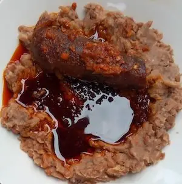

Ewa Agoyin and Pepper Sauce

Ewa Agoyin with pepper sauce - The Old Time Way
Description
Ewa Agoyin (Ewa Aganyin) is a very popular street food in the South West of Nigeria.
It is very easy to prepare. It is made by boiling beans until it’s really tender
and then mashing it.
Ewa Agoyin is usually accompanied by a spicy sauce which is usually referred to as Ewa Agoyin (Ewa Agoyin) Stew.
Ewa Aganyin sauce is a spicy sauce made with dried tatashe, chili pepper, and lot of onions.
Ingredients for Ewa Agoyin
- 3 cups of black-eyed beans or white Beans
- Salt to taste
- Water, enough to boil the beans
Ingredients for Ewa Agoyin Pepper Sauce
- 1 cup palm oil
- 2 medium sized onions, 1 should be thinly sliced
- 1/4 cup of dried shombo peppers
- 1 teaspoon of minced ginger
- 1-3 pieces of Cameroon pepper
- 2-3 tablespoons of ground crayfish
- 1-2 dried bell pepper (tatashe)
- Seasoning cubes to taste
- Salt To Taste
Steps
- Soak your dried shombo and bell peppers in hot water possibly overnight or for about 6hours till they get plump.
- Slice one of the onions then add your plump dried peppers, minced ginger and Cameroon pepper to a blender. Add a bit of water and blend coarsely (it shouldn’t be smooth, let the seeds still show). Transfer into a bowl and set aside.
- Measure your beans into a pot, about 6-8 cups of water and boil till it’s very soft. This should take about 2 hours. When tender, add a pinch of salt and mash with a hand mixer or masher.
- In a large pan, add your palm oil and cover with a tight lid then allow to bleach for about 10-12mins.
- Reduce the heat to low after bleaching then add your thinly sliced onions and allow to fry till it’s caramelise or slightly burnt.
- Reduce the heat to low after bleaching then add your thinly sliced onions and allow to fry till it’s caramelise or slightly burnt.
- Turn off heat and serve your Ewa Agoyin with Agege Bread preferably
Return to index page